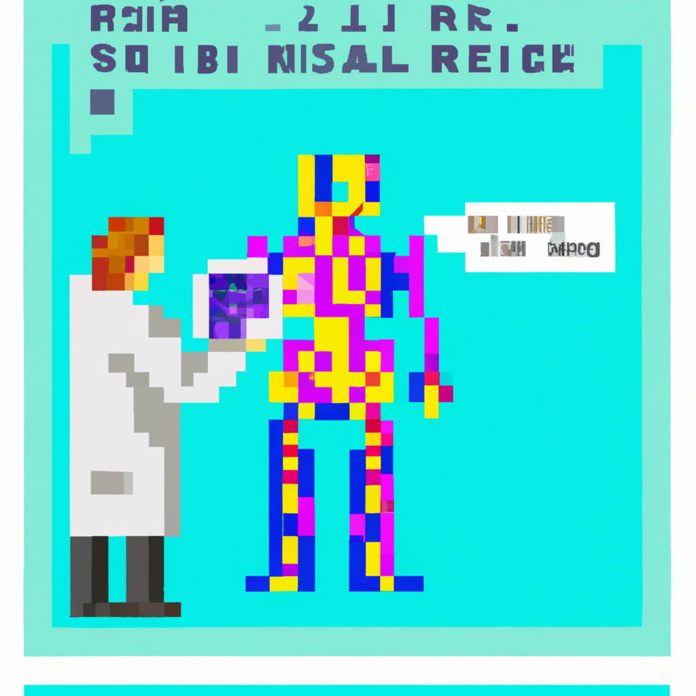

Why AI will never replace the radiologist
As technology advances, so too does the idea that artificial intelligence (AI) could replace the radiologist. After all, AI can identify and diagnose diseases faster and more accurately than humans, right?
The truth is, AI will never completely replace the radiologist. This is because AI still has its limitations and can・t diagnose everything perfectly. AI is only as good as the data it・s given, so if the data isn・t accurate or complete, then the AI can・t accurately diagnose diseases.
In addition, AI can・t provide the same level of care and compassion that a radiologist can. AI can・t communicate with patients in the same way that a radiologist can, which is essential for providing quality care. AI also can・t interpret images in the same way that a radiologist can. AI can・t interpret images the same way a human can, as it can・t differentiate between normal anatomy and pathology.
At the end of the day, AI will never replace the radiologist. AI is a powerful tool that can help radiologists do their job better and faster, but it will never replace them. AI can help radiologists identify and diagnose diseases faster and more accurately, but it cannot replace the human touch and compassion that radiologists can provide to their patients.